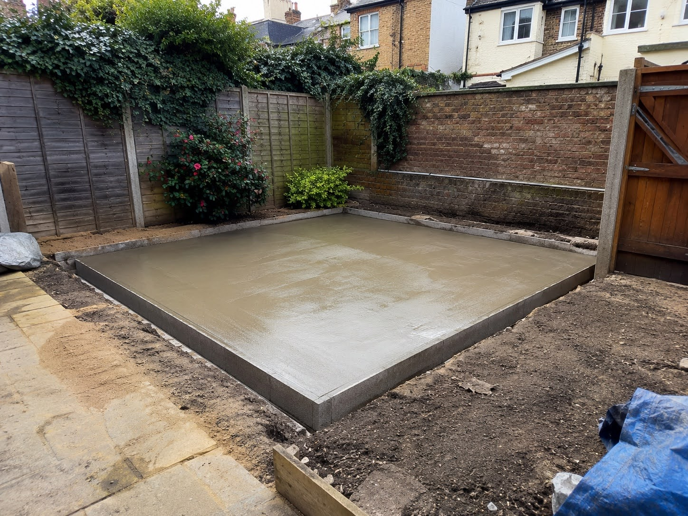
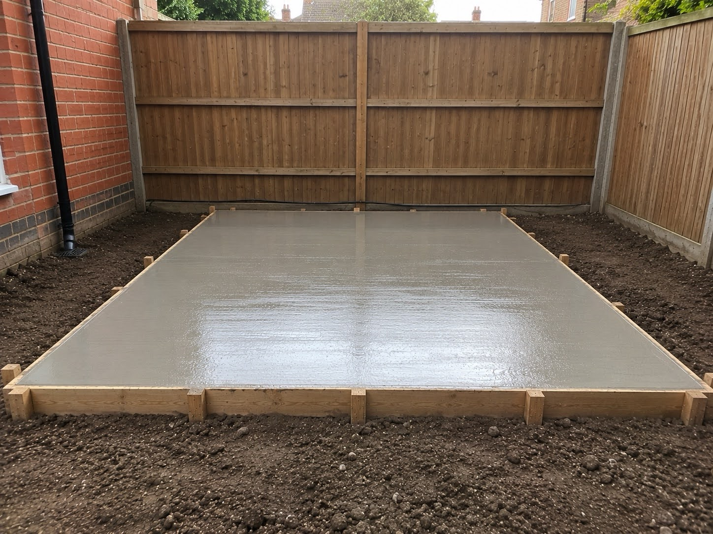
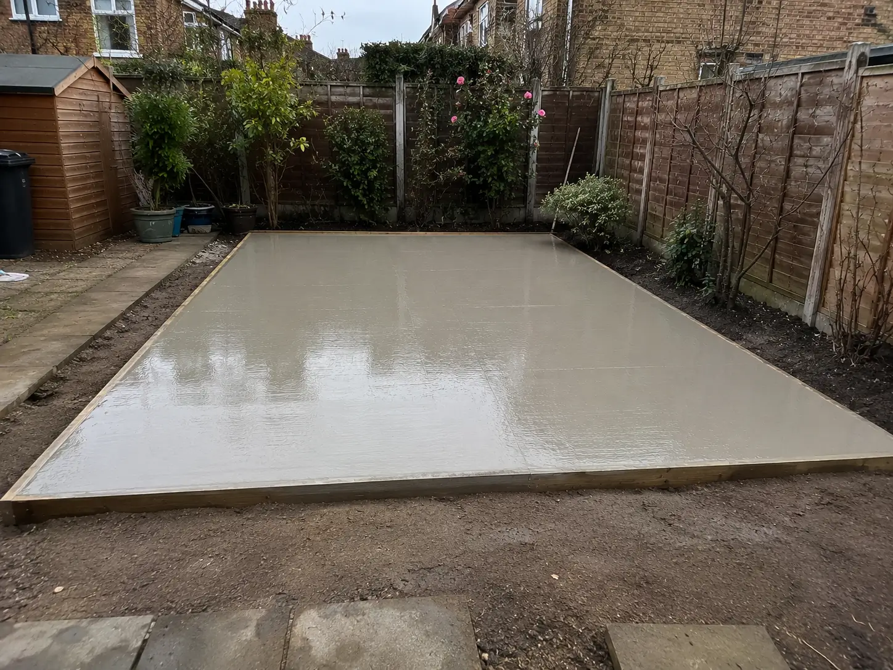

Concrete Bases installed in Enfield Gardens
At Concrete Bases Enfield
we fit durable concrete bases throughout Enfield built for long term structural strength.
With over 10 years experience in concrete base work we design and build each base tailored to the needs of your outdoor building.
The concrete we use is supplied through established batching plants that serve Enfield.
For garden structures the base installation underneath is just as important as the building, if it's sat on a poor base the structure can age faster.
The quality this service will bring
- Site-specific ground preparation ensuring your base sits flush
- Edge-forming and fall planning for effective long term drainage
- Clear communication throughout the whole installation
- Long term structural support for your garden structure
Why Work With Us
Free Quotes Same Week Site Visits
10+ Years Of Concrete Base Experience
Over 120+ Successful Concrete Base Projects Completed
Enfield Experienced Site Access Familiarity
Our Concrete Base Work In Enfield





Common Structures Our Concrete Bases Are Used For
Concrete bases provide the stable, load-bearing foundation needed for a wide range of outdoor structures and construction projects. A properly installed base helps distribute weight evenly, reduces movement over time and creates a level platform for long-term structural reliability.
Across Enfield, we install concrete bases commonly for residential projects, garden developments, outdoor buildings and light commercial structural work where strength, durability and ground stability are important. The exact specification of the base will often depend on the intended use, structural load requirements and site conditions.
Common Uses For Concrete Bases
- Timber-framed buildings and prefabricated outdoor constructions
- Storage buildings and secure outdoor equipment housing
- Home improvement projects requiring reinforced ground preparation
- Outdoor leisure and recreational structures
- Workshop and hobby-use buildings
- Outdoor office spaces and detached work environments
Durable Concrete Bases Built in Enfield
From how concrete is poured and installed to even how strong-concrete is made in the first place, it's all about timing and local expertise, choosing a local Enfield concrete shed base service means working with people who understand the area, garden layouts and access limitations, this is important so jobs can be planned, executed and completed properly.
Us being a local Enfield concrete base contractor means faster delivery with materials therefore you'll get quicker turn arounds and fewer hold ups if any on the day of installation.


What Local Knowledge gives you
- Enfield specific property type & garden layout knowledge
- Faster delivery & completion for concrete bases
- Correct installation method for Enfield soil conditions and requirements of your structure